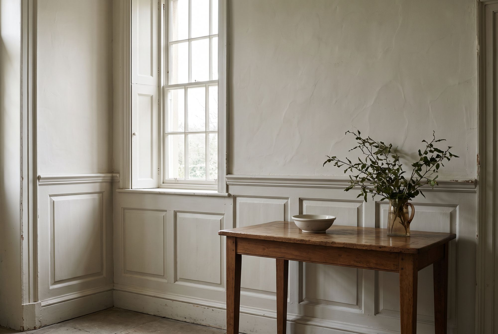

c. 1714 – 1830
Georgian
Order and restraint. Rooms are organised like a classical column: the dado as pedestal, the wall as shaft, the cornice as entablature.
Where you'll find itTown houses, rectories, farmhouses refronted in brick or stone, country houses.
- Profiles
- Early: full-height raised-and-fielded panelling with bolection moulds. Later: panelling drops to dado height, with ovolo and astragal details and a plaster wall above.
- Finish
- Painted softwood (deal), with oak in older or grander rooms.
- Colour
- StoneDrabPea greenOff-white
- Evidence
- Surviving panelling, paint scrapes, and builders' pattern books such as Batty Langley's and William Pain's.
- Our take
- Wardrobes set within the dado line, ovolo-moulded in-frame doors, and a cornice that returns into the room's own.

Concept image